To reduce computational cost of least-squares problem, images are downsampled.
In order to maintain the balance between RGB channels, the averaged values of color channels are used for optimization.
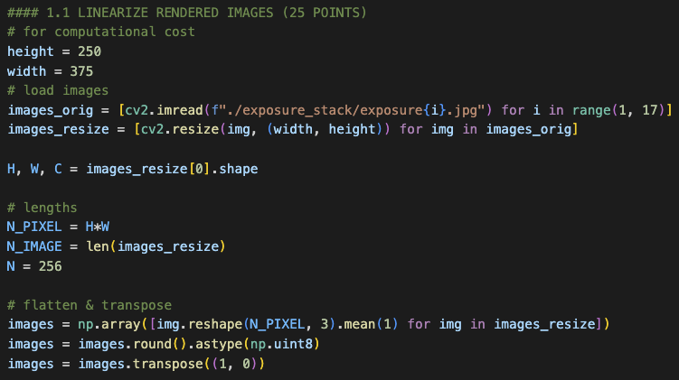
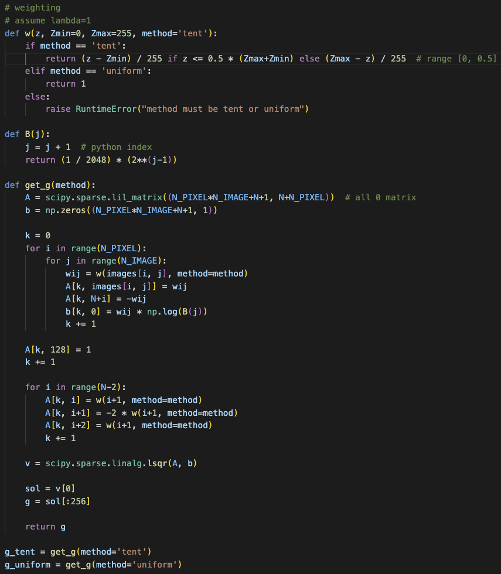
Fig 1. code for linearization
'tent' and 'uniform' weighting schemes are implemented as function 'w' for constructing least-squres and
the weight is normalized to have a value between 0 and 1.
A function 'get_g' is implemented by referring to the paper "Recovering high dynamic range radiance maps from photographs".
The plot of the predicted function g for each weighting schemes is as follows.
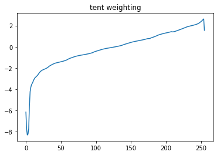
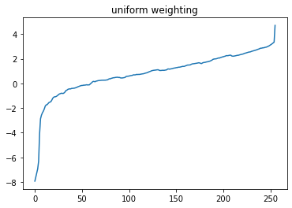
Fig 2. The predicted function g of the two weighting schemes
1.2. MERGE EXPOSURE STACK INTO HDR IMAGE (15 POINTS)
A python library "rawpy" have same function as "dcraw" in Matlab.
I do white balancing using the camera's profile by activating 'use_camera_wb' parameter,
and use sRGB color space and do demosaicing using AHD. (reference: https://letmaik.github.io/rawpy/api/rawpy.Params.html#rawpy.Params)
RAW and JPG images are downsampled for reducing computational cost and
JPG images are linearized through two optimized function g.
Two linear images are normalized to have values from 0 to 1.
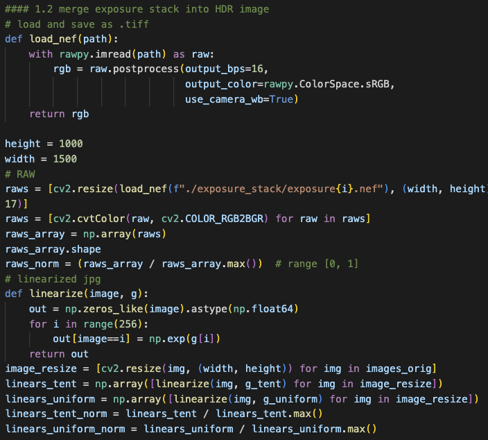
Fig 3. Load RAW and linearize JPG files.
A function 'get_weight_map' returns the weights for two weighting schemes from input image, which are clipped from 0.01 to 0.99.
Eight HDR images are generated and saved using 'cv2.imwrite'.
Generated HDR images are attached to the KLMS.
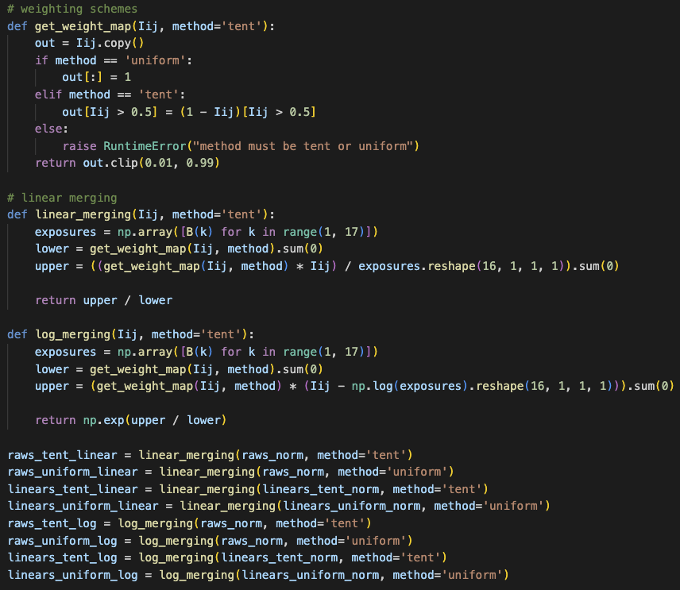
Fig 4. Code for merging exposure stack into HDR
2. TONEMAPPING (50 POINTS)
2.1. PHOTOGRAPHIC TONEMAPPING (20 POINTS)
The implementation of two photographic tonemapping methods is shown below.
Tonemaps of two methods are saved into "./tonemap" directory.
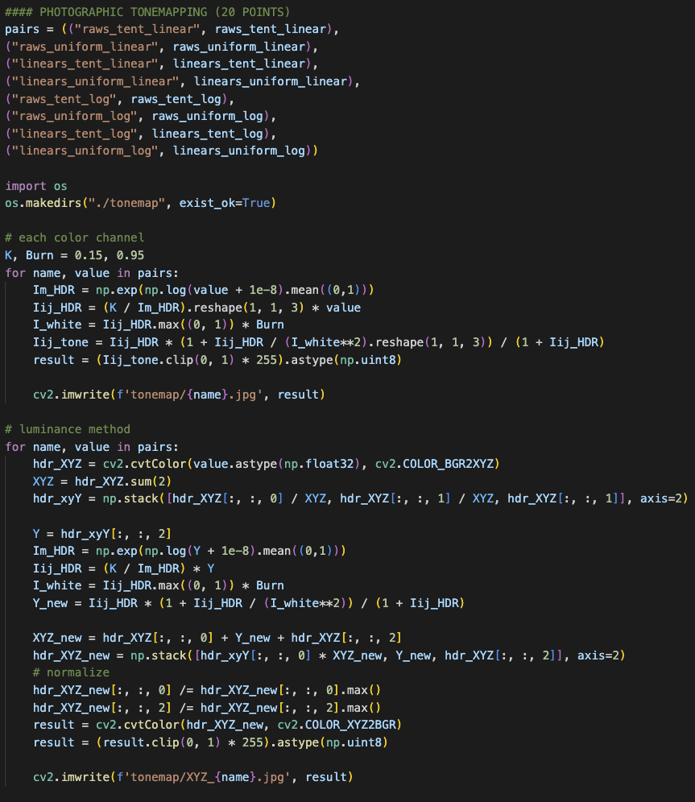
Fig 5. Code for photographic tonemapping
Eight images tonemapped by each RGB channel, which consist of different weight schemes, sources(RAW or JPG), and merging algorithms(linear or logarithmic), are as follows.
Most images are noisy, but "Linearized JPG + uniform + linear merging" and "RAW + uniform + logarithmic merging" images are well represented in both bright and dark areas.
The results of applying the luminance method to these two images are as follows.
Fig 7(a). Linearized JPG + uniform + linear merging with the luminance method
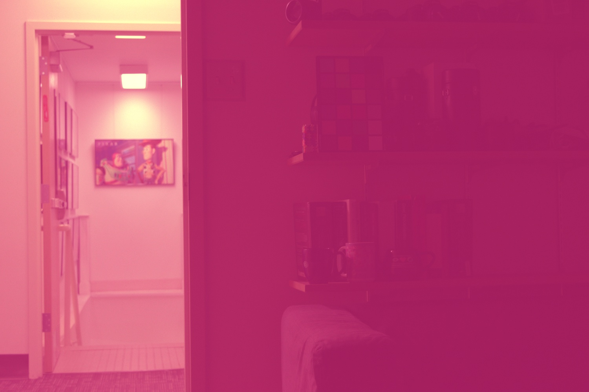
Fig 7(b). RAW + uniform + logarithmic merging with the luminance method
The images with the luminance methods shows distorted color, so it seems to be an improperly implemented or inaccurate method.
The following are the results for different values of K and B.
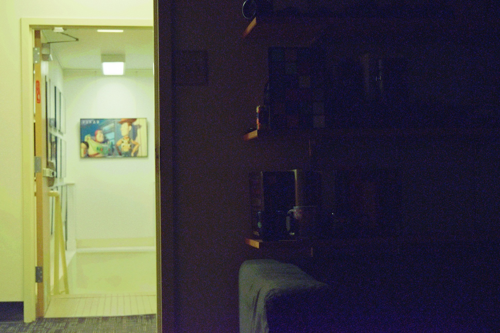
Fig 8(a). Linearized JPG + uniform + linear merging with K=0.3
Fig 8(b). RAW + uniform + logarithmic merging with B=0.7
The image that changes B has little difference from the original image, and it can be seen that it has become slightly brighter as K increases.
2.2. TONEMAPPING USING BILATERAL FILTERING (30 POINTS)
The followings are the implementation code and results for the tonemapping with bilateral filtering.
Fig 9. Code for tonemapping with bilateral filtering
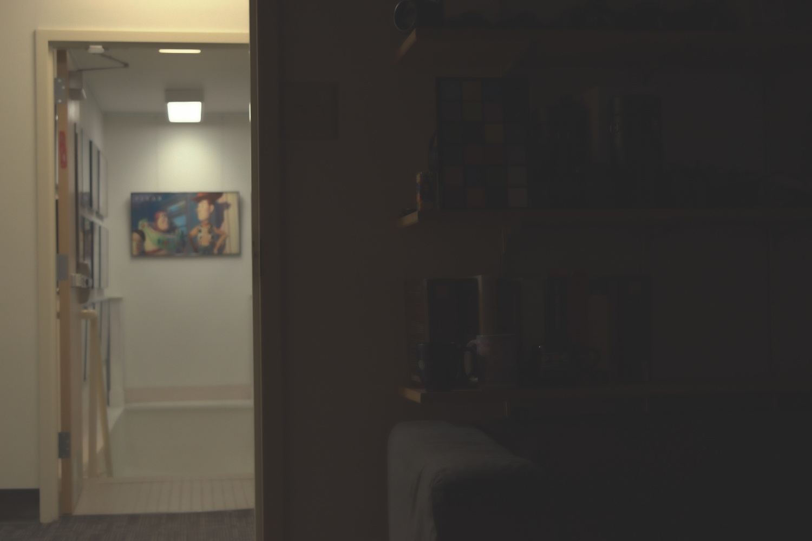
Fig 10(a). RAW + uniform + logarithmic merging with S=2
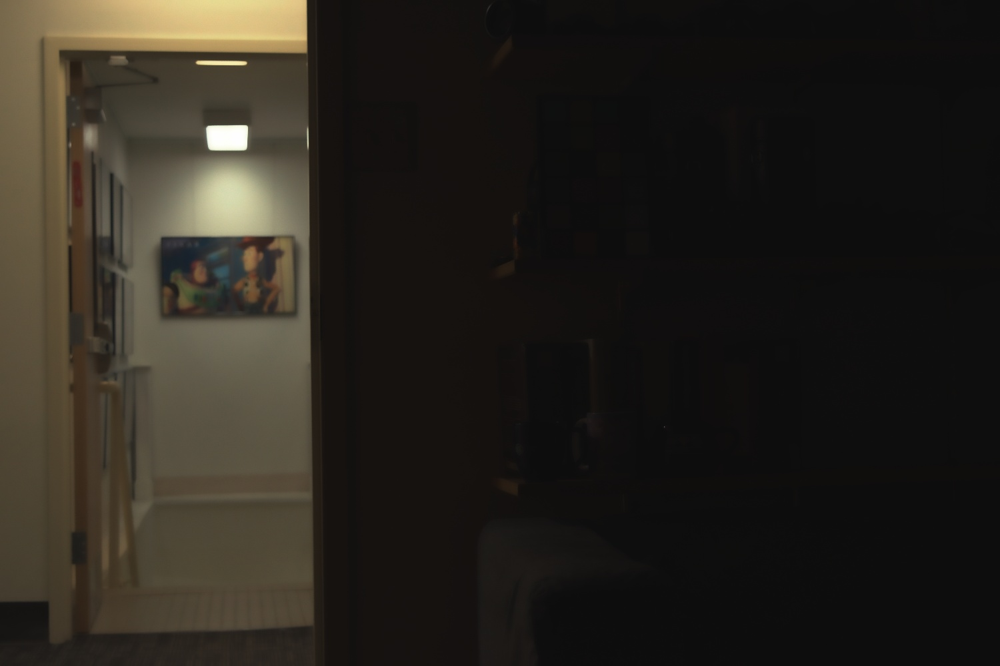
Fig 10(b). RAW + uniform + logarithmic merging with S=3
It can be seen that it is more natural than the same image applied with photographic tonemapping, and the larger the S, the darker it is.